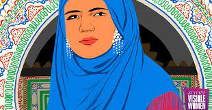

Fatima-Al-Fihri is a very inspiring hero for women, showing everyone that a woman has alot more to her self than she looks.She is the first woman amongst all teachers to open a university.She was a Muslim and so am I,Thats what makes happiest.She is a woman who truely inspires many females including me.
Fatima-Al-Fihri is a woman who opened the first ever university and is a great role model.She truly believes in a woman abilities beyond her limits.She is very motivational and if any woman reads about her gets a super boost and just believes that she can do it!And that is the reason I love Fatima-Al-Fihri(I have her name also)
